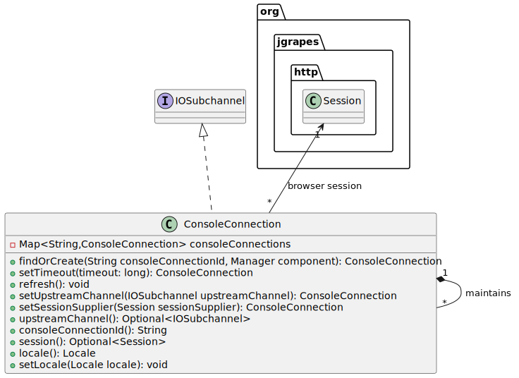

Class ConsoleConnection
- All Implemented Interfaces:
Associator,Channel,Eligible,Subchannel,IOSubchannel
An instance
is created when a new console window opens the WebSocket
connection to the server for the first time. If the
connection between the browser and the server is lost
(e.g. due to temporary network failure), the console code in
the browser tries to establish a new WebSocket connection
to the same, already existing ConsoleConnection.
The ConsoleConnection object is thus independent
of the WebSocket connection that handles the actual transfer
of notifications.

To allow reconnection and because there is no reliable way
to be notified when a window in a browser closes, Closed
events from the network are ignored and ConsoleConnections
remain in an open state as long as they are in use. Only if no
data is received (i.e. refresh() isn’t called) for the
time span configured with
ConsoleWeblet.setConnectionNetworkTimeout(java.time.Duration) a timer closes
the connection by calling the close() method. (Method
isConnected() can be used to check the connection state.)
In order to keep the console connection in an open state while
the connection is inactive, i.e. no data is sent due to user activity,
the SPA automatically generates refresh messages as configured
with ConsoleWeblet.setConnectionRefreshInterval(Duration).
ConsoleConnection implements the IOSubchannel
interface. This allows the instances to be used as channels
for exchanging console connection scoped events with the
WebConsole component. The upstream channel
(see upstreamChannel()) is the channel of the
WebSocket. It may be unavailable if the WebSocket connection has
been interrupted and not (yet) re-established.
The IOSubchannel’s response EventPipeline
must be used to send events (responses) to the console connection
in the browser. No other event pipeline may be used for
this purpose, else messages will interleave.
To avoid having too many open WebSockets with inactive console
connections, a maximum inactivity time can be configured with
ConsoleWeblet.setConnectionInactivityTimeout(Duration).
The SPA always checks if the time since the last user activity
has reached or exceeded the configured limit before sending the
next refresh message. In case it has, the SPA stops sending
refresh messages and displays a “suspended” dialog to the user.
When the user chooses to resume, a new WebSocket is opened by the
SPA. If the Session used before the idle timeout is
still available (hasn’t reached its idle timeout or absolute timeout)
and refers to a ConsoleConnection not yet closed, then this
ConsoleConnection is reused, else the SPA is reloaded.
As a convenience, the ConsoleConnection provides
direct access to the browser session, which can
usually only be obtained from the HTTP event or WebSocket
channel by looking for an association of type Session.
-
Nested Class Summary
Nested classes/interfaces inherited from interface org.jgrapes.core.Channel
Channel.DefaultNested classes/interfaces inherited from interface org.jgrapes.io.IOSubchannel
IOSubchannel.DefaultIOSubchannelNested classes/interfaces inherited from interface org.jgrapes.core.Subchannel
Subchannel.DefaultSubchannel -
Field Summary
-
Method Summary
Modifier and TypeMethodDescriptionstatic Set<ConsoleConnection>byConsole(WebConsole console) Return all connections that belong to the given console as a new unmodifiable set.voidclose()Close this connection.Returns the time when this connection will expire.booleanChecks if a network connection with the browser exists.booleanisOpen()Checks if the console connection is open.locale()Return the console connection’s locale.voidrefresh()Resets theConsoleConnection’s timeout.session()Sets the locale for this console connection.setSessionSupplier(Supplier<Optional<Session>> sessionSupplier) Sets or updates associated browser session.setTimeout(long timeout) Changes the timeout for thisConsoleConnectionto the given value.setUpstreamChannel(IOSubchannel upstreamChannel) Sets or updates the upstream channel.Returns the supported locales.toString()Provides access to the weblet’s channel.Methods inherited from class org.jgrapes.io.IOSubchannel.DefaultIOSubchannel
byteBufferPool, charBufferPool, responsePipeline, setByteBufferPool, setCharBufferPoolMethods inherited from class org.jgrapes.core.Subchannel.DefaultSubchannel
associated, mainChannel, setAssociatedMethods inherited from class java.lang.Object
clone, equals, finalize, getClass, hashCode, notify, notifyAll, wait, wait, waitMethods inherited from interface org.jgrapes.core.Associator
associated, associated, associated, associated, associatedGet, setAssociatedMethods inherited from interface org.jgrapes.io.IOSubchannel
respondMethods inherited from interface org.jgrapes.core.Subchannel
defaultCriterion, isEligibleFor, mainChannel
-
Method Details
-
byConsole
Return all connections that belong to the given console as a new unmodifiable set.- Parameters:
console- the console- Returns:
- the sets the
-
setTimeout
Changes the timeout for thisConsoleConnectionto the given value.- Parameters:
timeout- the timeout in milli seconds- Returns:
- the console connection for easy chaining
-
expiresAt
Returns the time when this connection will expire.- Returns:
- the instant
-
refresh
Resets theConsoleConnection’s timeout. -
close
Close this connection.The connection is removed from the set of open connections and a
Closedevent is fired on the connection. -
isOpen
Checks if the console connection is open.- Returns:
- true, if is open
-
isConnected
Checks if a network connection with the browser exists.- Returns:
- true, if is connected
-
webletChannel
Provides access to the weblet’s channel.- Returns:
- the channel
-
setUpstreamChannel
Sets or updates the upstream channel.This method should only be invoked by the creator of the
ConsoleConnection, by default theConsoleWeblet.- Parameters:
upstreamChannel- the upstream channel (WebSocket connection)- Returns:
- the console connection for easy chaining
-
setSessionSupplier
Sets or updates associated browser session.This method should only be invoked by the creator of the
ConsoleConnection, by default theConsoleWeblet.- Parameters:
sessionSupplier- the browser session supplier- Returns:
- the console connection for easy chaining
-
upstreamChannel
- Returns:
- the upstream channel
-
session
- Returns:
- the browser session
-
supportedLocales
Returns the supported locales.- Returns:
- the set of locales supported by the console
-
locale
Return the console connection’s locale.The locale is initialized from the browser session’s locale.
- Returns:
- the locale
-
setLocale
Sets the locale for this console connection.- Parameters:
locale- the locale- Returns:
- the console connection
-
toString
- Overrides:
toStringin classSubchannel.DefaultSubchannel
-